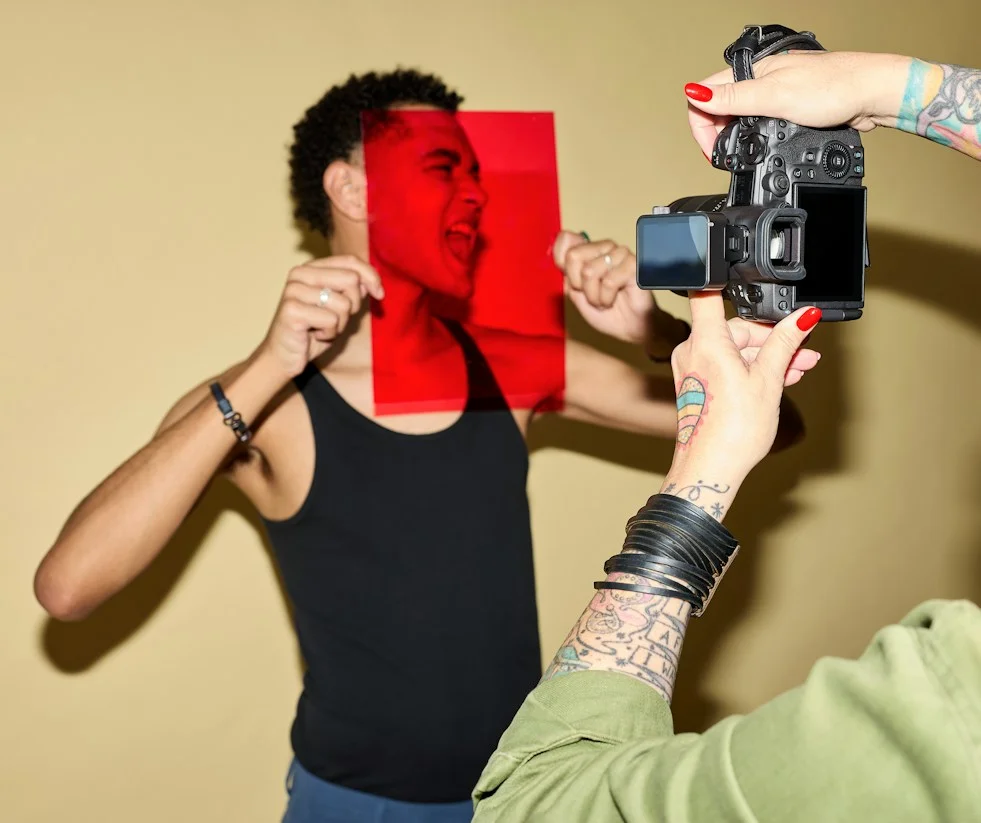
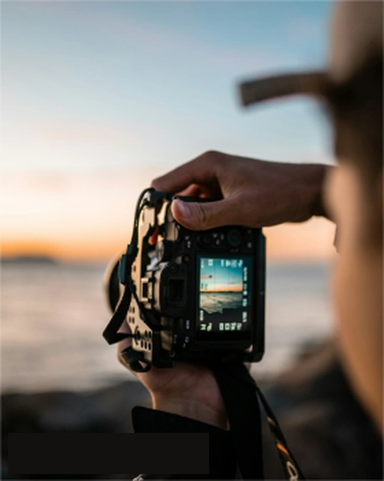
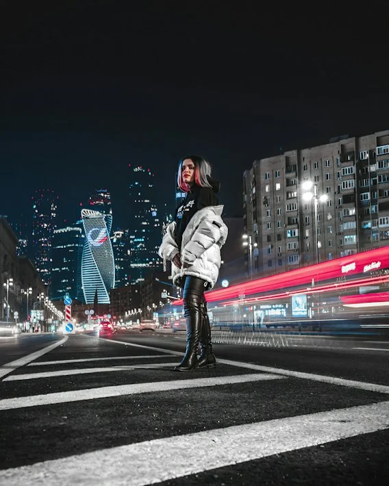

Inside a Summer Campaign
How we navigated changing Mediterranean light to capture seventy looks in three days without sacrificing photographic intimacy.
Commercial, editorial & lifestyle photography crafted with intention. Sculpting light, form, and human resonance for culture-defining brands.
Founded by visual director Valérie Laurent, ATELIER V works closely with brands, people, and creative teams to create distinctive visual stories rooted in spatial harmony and unhurried intention.

We collaborate with international fashion ateliers, architectural consultancies, and independent creators who demand imagery that resonates beyond the noise of temporal cycles.
A curated selection of campaigns, editorial spreads, and commissioned still life studies.
Campaigns, advertising and brand imagery designed for global scale, multi-channel deployment, and lasting cultural resonance.
Stories, publications and creative editorials with cultural depth, curated wardrobe styling, and narrative authenticity.
Personal branding, professional portraits and creative portraits captured with intimate dignity and deliberate natural lighting.
Authentic moments, experiences and visual storytelling documented with effortless elegance and documentary precision.
From creative treatment and location scouting to on-set direction and master colour grading.
EXPLORE SERVICESCommissioned to redefine the visual identity for an artisan watchmaker in Geneva, we spent seven days embedded inside the workshop. Our objective was not merely to document luxury objects, but to translate the visceral devotion to millimeters, patience, and inherited heritage.
Using solely natural daylight augmented by subtle reflective linen boards, each frame preserves the tactile atmosphere of horological mastery without theatrical artificiality.

In a digital environment saturated with synthetic hyper-perfection, our conviction is anchored in tactile reality. We believe that authentic human presence and thoughtful composition possess an enduring authority that synthetic trickery cannot duplicate.
Every shoot is approached like a short film: we develop an architectural understanding of the client's world, define spatial and tonal boundaries, harness unhurried natural light, and create room for genuine spontaneity within that disciplined container.
Direction that disarms subjects to uncover real expression and narrative truth.
Sculpting shadows with restraint rather than artificial saturation.
How we navigated changing Mediterranean light to capture seventy looks in three days without sacrificing photographic intimacy.

An exploration of brutalist urban geometry and how reflective glass towers turn streets into impromptu natural light studios.

From initial visual treatment and moodboard curation to final master contact sheets: a transparent breakdown of editorial flow.
Working with her felt less like a photoshoot and more like creating something together.
Let's create something meaningful together. We are currently accepting commercial commissions and editorial assignments worldwide.